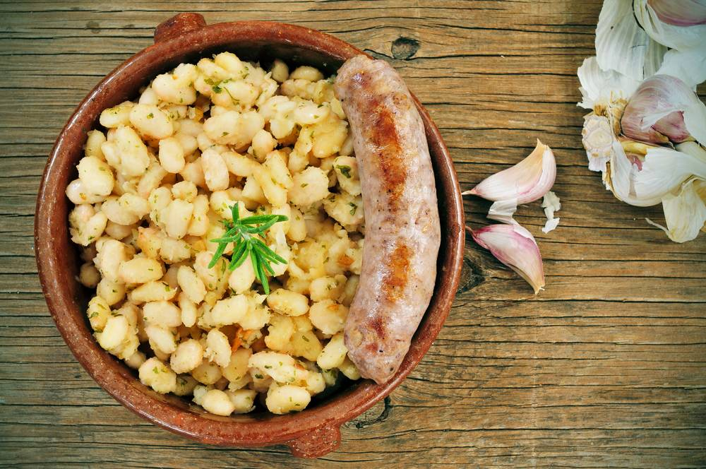

Botifarra amb seques

La amb botifarra amb seques és un plat tradicional de la gastronomia catalana que consisteix en una botifarra a la graella acompanyada de mongetes (mongetes blanques o mongetes). És una recepta senzilla però molt apreciada pel seu sabor i vincle amb la cultura i la cuina popular de Catalunya.
Historia i origen
L´origen d´aquest plat es remunta a la cuina pagesa catalana de l´Edat Mitjana. En aquella època, els agricultors necessitaven menjars nutritius i econòmics, que aprofitessin els productes locals i fossin fàcils de preparar.
Les mongetes eren un aliment bàsic perquè els llegums eren fàcils de conservar i proporcionaven energia durant les llargues jornades de treball al camp.
La botifarra és una de les embotits més antics de Catalunya, amb referències que daten de l'època romana. La seva preparació s'ha mantingut pràcticament intacta des de llavors, i en molts masos s'hi elabora artesanalment.
Al llarg dels segles, aquest plat es va convertir en un emblema de la cuina catalana, passant de les llars rurals als restaurants i festes populars.
¿Perquè es una recepta famosa?
La fama d'aquest plat rau en diversos aspectes:
✅ Sabor i senzillesa → Tot i ser un plat simple, la combinació de la botifarra sucosa amb la textura cremosa de les mongetes i un toc d'oli d'oliva el fa irresistible.
✅ Ingredient icònic → La botifarra és un embotit típic de Catalunya, amb diverses varietats com la blanca, la negra o la de perol. La qualitat i el sabor artesanal han contribuït a la reputació del plat.
✅ Símbol d'identitat → Es considera un plat patrimonial de Catalunya, representant la tradició i la connexió amb la terra.
✅ Popularitat en restaurants i festivals → És una recepta que es troba a totes les fondes, masies i restaurants tradicionals catalans, i sol servir-se a festivals gastronòmics i fires.
Llocs típics
"Mongetes amb Botifarra" es muy popular en toda Cataluña, pero hay algunas regiones donde destaca especialmente:
📍 Vallès Occidental y Vallès Oriental → Estas comarcas son famosas por su producción de butifarras de gran calidad, por lo que es un plato muy común en sus restaurantes y fiestas populares.
📍 Barcelona → Muchos restaurantes de cocina catalana tradicional en la capital incluyen este plato en su menú, tanto en su versión más clásica como en versiones más gourmet.
📍 Girona y la Garrotxa → En esta zona se elabora una butifarra artesana excepcional, lo que ha hecho que el plato gane aún más protagonismo.
📍 Ferias gastronómicas y fiestas mayores → Es un plato imprescindible en muchas festividades locales, como la Fira de la Botifarra en La Garriga o la Fira de l’Embotit en Olot.